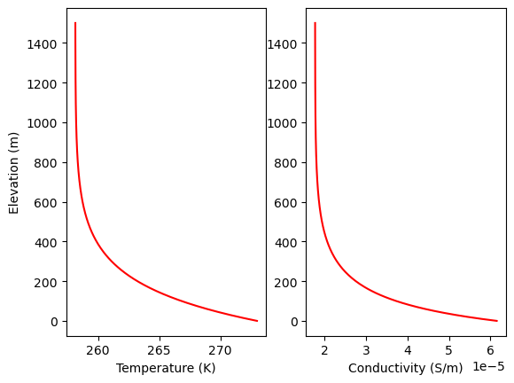

Integrating heat transfer physics into ray-based attenuation tomography
Additional to (or in place of) the smoothness constraint from regularization, we can actually integrate physics into the objective function via lagrange multiplier. Here as a demonstration, we can write out the objective functions in both 1D (along ice depth) and 2D (along depth and flow direction) cases:
Here \(F[...]\) represents the Arrhenius relationship that transforms temperature to ice electrical conductivity. The \(u\phi - \dot{\epsilon} \tau\) term represents the source and sink of heat.
The advantage of this 2D model is its potentially to account for the the complex heat structure meanwhile regulating the conductivity smoothness naturally.
This objective minimization can be solved easily with Automatic Differentiation.
import torchimport numpy as npimport matplotlib.pyplot as plt# derived constantthermo_conduct = k/(rho_i*cp) # thermal diffusivityz = torch.linspace(0, H, nz)dz = z[1] - z[0]# -----------------------------------------class IceThermal:def__init__(self, H=1500.0, Ts=273.15-15, A=4.96e-25, a=0.2, L=40e3, u=300, dTdx=0):# Constantsself.nz =300# number of depth pointsself.rho_i =917# kg m^-3self.cp =2050# J kg^-1 K^-1, specific heat capacityself.Tm =273# Kself.n =3# Glen's flow law exponentself.k =2.22# W m^-1 K^-1, ice thermal conductivityself.G =0.05# W m^-2 (50 mW m^-2 geothermal heat flux)self.g =9.8# m/s^2# Frequency of the radarself.freq =1e6# 1 MHzself.omega =2* np.pi *self.freq# Synthetic temperature profile parameters as tensorsself.H = torch.tensor(H, dtype=torch.float32, requires_grad=True) # mself.Ts = torch.tensor(Ts, dtype=torch.float32, requires_grad=True) # surface temperatureself.A = torch.tensor(A, dtype=torch.float32, requires_grad=True) # Pa^-3 s^-1, at 265Kself.a = torch.tensor(a, dtype=torch.float32, requires_grad=True) # m/a, surface accumulation rateself.L = torch.tensor(L, dtype=torch.float32, requires_grad=True) # m, glacier length scaleself.u = torch.tensor(u, dtype=torch.float32, requires_grad=True) # m/a along flow velocityself.dTdx = torch.tensor(dTdx, dtype=torch.float32, requires_grad=True) # deg C per m# Derived constantself.thermo_conduct =self.k / (self.rho_i *self.cp) # thermal diffusivityself.z = torch.linspace(0, self.H.item(), self.nz)def calc_Pe(self):"""Calculate Pe using the accumulation rate."""returnself.rho_i *self.cp *self.a *self.H /self.kdef T_to_conduct(self, T):"""Calculate electrical conductivity from temperature.""" Tr =251# kelvin sigma0 =9.2e-6# S/m E0 =0.51*1.602e-19# J k =1.380e-23# J/K, Boltzmann's constant# Arrhenius relation sigma = sigma0 * torch.exp(-(E0 / k) * (1/ T -1/ Tr))return sigmadef conduct_to_T(self, sigma):"""Calculate temperature from electrical conductivity.""" Tr =251# kelvin sigma0 =9.2e-6# S/m E0 =0.51*1.602e-19# J k =1.380e-23# J/K, Boltzmann's constant T =1/ (1/ Tr - (k / E0) * torch.log(sigma / sigma0))return Tdef analy_hac_sol(self, phi, w, alpha):"""Calculate analytical solution for heat conduction.""" z =self.z H =self.H Ts =self.Ts Tm =self.Tm u =self.u coefA = (Tm - Ts - (u * phi * H) / w) / (1- torch.exp(w * H / alpha)) termB = (Ts - Tm * torch.exp(w * H / alpha) + u * phi * H / w) / (1- torch.exp(w * H / alpha))return coefA * torch.exp(w * z / alpha) + termB - u * phi * z / wdef analy_sol(self, w, alpha):"""Calculate analytical solution for temperature profile.""" z =self.z H =self.H Ts =self.Ts Tm =self.Tm numerator = (Ts - Tm) * torch.exp(-w * (z - H) / alpha) + Tm - Ts * torch.exp(w * H / alpha) denominator =1- torch.exp(w * H / alpha)return numerator / denominator# Define EM-related functions --------------------------import numpy as npimport torchclass AttenuationTomography:def__init__(self, omega, dz, initial_guess):self.omega = omega # Frequency-related parameterself.dz = dz # Depth incrementself.initial_guess = initial_guess.clone().requires_grad_(True) # Initial guess for conductivitydef forward_model(self, conductivity): mu0 =4* np.pi *1e-7# Magnetic permeability of free space alpha = torch.sqrt(mu0 *self.omega * conductivity /2) attenuation = torch.exp(-torch.cumsum(alpha, dim=0) *self.dz)return attenuationdef objective(self, conductivity, observed, alpha): epsilon =1e-11 predicted =self.forward_model(conductivity)# Calculate data misfit data_misfit = (1/ predicted.size(dim=0)) * torch.sum((torch.log10(predicted + epsilon) - torch.log10(observed + epsilon)) **2)# Calculate smoothness smoothness = alpha * torch.sum(torch.diff(conductivity) **2)# Normalize terms data_misfit = data_misfit / (1+ data_misfit) # Prevent division by zeroreturn data_misfit + smoothnessdef heat_transfer_analytc_loss(self, u, z, Pe): z.requires_grad =True u_z = torch.autograd.grad(u.sum(), z, create_graph=True)[0] u_zz = torch.autograd.grad(u_z.sum(), z, create_graph=True)[0] deq = Pe * u_z + u_zzreturn deqdef objective_plus_physics(self, conductivity, observed, alpha, beta, gamma, Tm, Ts): epsilon =1e-11 predicted =self.forward_model(conductivity)# Calculate data misfit data_misfit = (1/ predicted.size(dim=0)) * torch.sum((torch.log10(predicted + epsilon) - torch.log10(observed + epsilon)) **2)# Add physics T =self.conduct_to_T(conductivity) # Assuming this method exists physics_loss = beta *self.heat_transfer_analytc_loss(T, z, Pe) # Assuming z and Pe are defined# Add boundary condition loss Ts_pred =self.conduct_to_T(conductivity[-1]) Tm_pred =self.conduct_to_T(conductivity[0]) BC_loss = gamma * (torch.abs(Tm_pred - Tm) + torch.abs(Ts_pred - Ts))# Calculate smoothness smoothness = alpha * torch.sum(torch.diff(conductivity) **2)# Normalize terms data_misfit = data_misfit / (1+ data_misfit) # Prevent division by zeroreturn data_misfit + smoothness + physics_loss + BC_lossdef invert(self, alpha, beta, gamma, observed): conductivity =self.initial_guess.clone().requires_grad_(True) optimizer = torch.optim.Adam([conductivity], lr=1e-6)for iteration inrange(500): # Number of iterations optimizer.zero_grad() loss =self.objective(conductivity, observed, alpha) lambda_reg =1e5# Small constant for regularization loss += lambda_reg * torch.sum(conductivity **2)if torch.isnan(loss):print(f"NaN detected in loss calculation. This is iteration {iteration}") loss.backward() torch.nn.utils.clip_grad_norm_([conductivity], max_norm=1.0) # Adjust max_norm as needed optimizer.step()# Optionally print the loss for monitoringif iteration %100==0:print(f"Iteration {iteration}, Loss: {loss.item()}")return conductivity.detach().numpy()# Utility--------------------------------------# Replace NaN values with the average of the 10 nearest non-NaN valuesdef sec_to_yr(u):# convert ()/s to ()/a, meaning per second to per yearreturn u*3.154e7def yr_to_sec(u):# convert ()/a to ()/sreturn u/(3.154e7)def replace_nans_with_neighbors(observed_field, num_neighbors=10):for i inrange(nz):if torch.isnan(observed_field[i]):# Get the indices of the neighbors left_indices =range(max(0, i - num_neighbors), i) right_indices =range(i +1, min(nz, i + num_neighbors +1))# Collect valid neighbor values neighbor_values = []for idx in left_indices:ifnot torch.isnan(observed_field[idx]): neighbor_values.append(observed_field[idx])for idx in right_indices:ifnot torch.isnan(observed_field[idx]): neighbor_values.append(observed_field[idx])# Calculate the average of valid neighborsif neighbor_values: observed_field[i] = torch.mean(torch.tensor(neighbor_values, dtype=torch.float32))
# get synthetic temperature profileT_hac = analy_hac_sol(z, H, Ts, Tm, yr_to_sec(u), dTdx, -yr_to_sec(a), thermo_conduct)T_ori = analy_sol(z, H, Ts, Tm, yr_to_sec(a), thermo_conduct) # without horizontal advection# get conductivity structuretrue_model = T_to_conduct(T_hac)fig, ax = plt.subplots(1,2)ax[0].plot(T_hac, z,'r')ax[0].set_ylabel('Elevation (m)')ax[0].set_xlabel('Temperature (K)')ax[1].plot(true_model, z,'r')ax[1].set_xlabel('Conductivity (S/m)')
/tmp/xpython_9355/2448760377.py:63: UserWarning: To copy construct from a tensor, it is recommended to use sourceTensor.clone().detach() or sourceTensor.clone().detach().requires_grad_(True), rather than torch.tensor(sourceTensor).
z = torch.tensor(z, dtype=torch.float32)
/tmp/xpython_9355/2448760377.py:78: UserWarning: To copy construct from a tensor, it is recommended to use sourceTensor.clone().detach() or sourceTensor.clone().detach().requires_grad_(True), rather than torch.tensor(sourceTensor).
z = torch.tensor(z, dtype=torch.float32)
Text(0.5, 0, 'Conductivity (S/m)')

# add 'noise' to conductivity structure (represents the ice chemistry variability)true_model = true_model +1e-6* np.random.randn(nz)# Generate synthetic observed data (with some noise)true_field = forward_model(torch.tensor(true_model, dtype=torch.float32))noise_level =0.9# 50% noiseobserved_field = true_field * (1+ noise_level * torch.randn(nz))print(torch.sum(observed_field[observed_field <=0]))observed_field[observed_field <=0] =float('nan')# Call the function to replace NaNsreplace_nans_with_neighbors(observed_field)# Plot observed fieldfig, ax = plt.subplots()ax.semilogx(observed_field.numpy(), z)ax.set_ylim(H, 0)ax.set_xlabel('Observed electric field strength')ax.set_ylabel('Depth from ice surface (m)')
/tmp/xpython_9355/2794860373.py:5: UserWarning: To copy construct from a tensor, it is recommended to use sourceTensor.clone().detach() or sourceTensor.clone().detach().requires_grad_(True), rather than torch.tensor(sourceTensor).
true_field = forward_model(torch.tensor(true_model, dtype=torch.float32))
/tmp/xpython_9355/133149505.py:2: UserWarning: To copy construct from a tensor, it is recommended to use sourceTensor.clone().detach() or sourceTensor.clone().detach().requires_grad_(True), rather than torch.tensor(sourceTensor).
initial_guess = torch.ones(nz) * torch.mean(torch.tensor(true_model, dtype=torch.float32))
/tmp/xpython_9355/2448760377.py:206: UserWarning: To copy construct from a tensor, it is recommended to use sourceTensor.clone().detach() or sourceTensor.clone().detach().requires_grad_(True), rather than torch.tensor(sourceTensor).
loss = objective(conductivity, torch.tensor(observed_field, dtype=torch.float32).clone().detach(), alpha)
/tmp/xpython_9355/133149505.py:32: UserWarning: To copy construct from a tensor, it is recommended to use sourceTensor.clone().detach() or sourceTensor.clone().detach().requires_grad_(True), rather than torch.tensor(sourceTensor).
true_field = forward_model(torch.tensor(true_model, dtype=torch.float32))
/tmp/xpython_9355/133149505.py:34: UserWarning: To copy construct from a tensor, it is recommended to use sourceTensor.clone().detach() or sourceTensor.clone().detach().requires_grad_(True), rather than torch.tensor(sourceTensor).
observed_field_db = 20 * torch.log10(torch.tensor(observed_field, dtype=torch.float32) / observed_field[0])